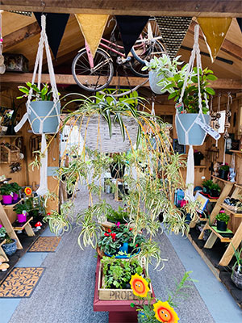

Gardenly
With an indoor garden, you can grow fresh plants, fruits, and herbs all year round.
Gardenly is an online marketplace for indoor gardens located in Wellington and founded by Kirsty Zhang, Paora Mason and Mila Tuala.
We are in the business of cultivating attractive indoor gardens to decorate homes and offices for individuals who many not have sufficient supply time, knowledge or equipment to successfully take care of plants.

As a social enterprise, our mission is to improve the environment and well-being of people living in urban and suburban Wellington. With the purpose of allowing users to donatea portion of profits to an environmental charity of their choice and measure the environmental impacts of having more plants.